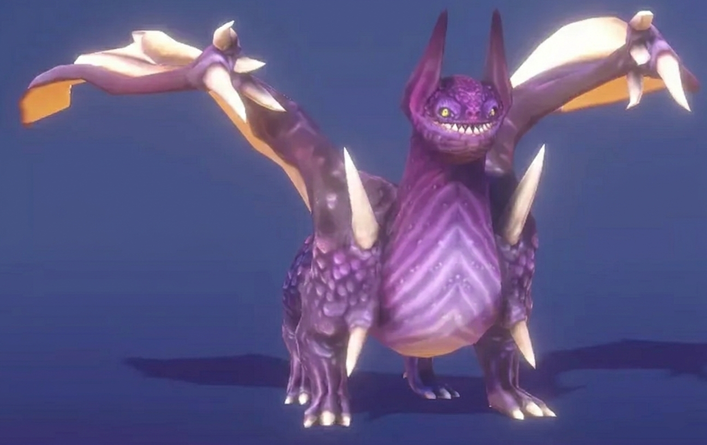

— 04
Designing
Every team member was required to design and implement at least one AI component. For me that meant the dragon — an enemy that needed to feel threatening without being unbeatable. The key design constraint was that the dragon had to be smart enough to create pressure but beatable with good strategy.
The greedy nearest-coin algorithm achieved this well: it's fast and efficient, but a player who plans their route can outpace it by collecting clusters of coins before the dragon reaches them.

The Level 2 spatial layout showing room structure, coin placement, and the dragon's starting position relative to the player.

The dragon guardian character design, used throughout all three levels as a recurring visual motif. This was a free asset from Unity, made by Dungeon Mason.